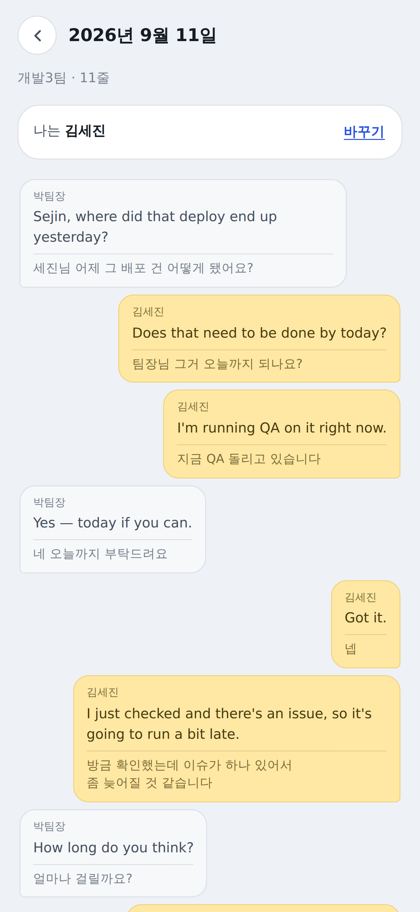
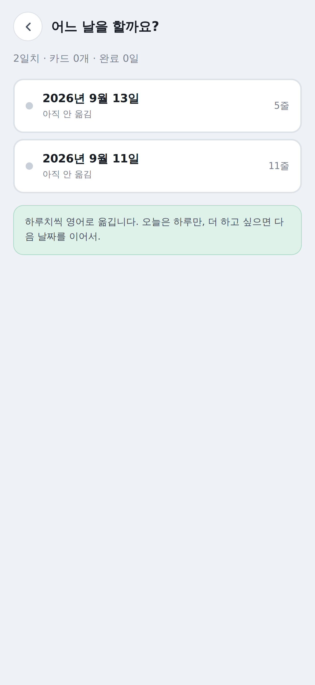
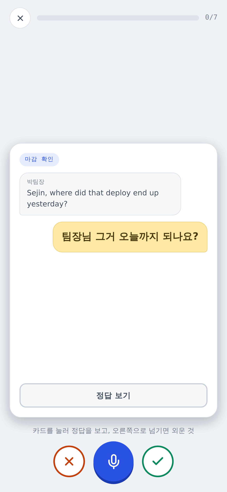

“확인하고 말씀드릴게요”, “조금 늦어질 것 같아요”, “넵”. 교재엔 없는데 회사에서 매일 쓰는 말입니다. 카톡 대화를 통째로 영어로 옮기고, 그 중 내가 한 말만 골라 입으로 말하는 연습을 합니다.

카톡의 «대화 내용 내보내기»로 받은 .txt 하나면 됩니다. 앱이 날짜별로 나눠서 하루치씩 처리합니다.


그때그때 해결되지만 같은 문장을 매번 다시 찾습니다. 여기서는 내가 실제로 친 말이 카드가 되어 남고, 틀린 것부터 다시 돌아옵니다.
“사과를 먹습니다”는 회사에서 쓸 일이 없습니다. 어제 단톡방에 친 말은 내일도 씁니다.
손가락 한 번으로 채점합니다. 왼쪽으로 넘긴 문장은 FSRS 간격 반복 스케줄러가 더 자주 데려옵니다.
마이크를 누르고 영어로 말하면 얼마나 맞았는지, 어떤 단어가 빠졌는지 알려줍니다. 재인이 아니라 인출 연습입니다.
남의 회사 단톡방이 지나가는 앱이라, 이 부분은 구체적으로 적습니다.
| 파일 업로드 | 없습니다. .txt는 기기 안에서 읽고 어디에도 올리지 않습니다 |
|---|---|
| 서버 저장 | 없습니다. 영어로 옮기는 그 순간에만 해당 날짜 대화가 전송되고, 저장되지 않습니다 |
| 회원가입 | 없습니다. 계정도 이메일도 받지 않습니다 |
| 광고 · 분석 도구 | 넣지 않았습니다 |
| 다른 사용자와 공유 | 공유 기능 자체가 없습니다. 대화는 본인 기기에만 남습니다 |